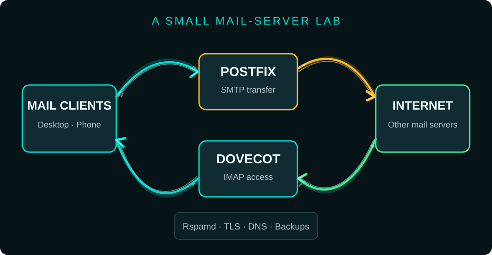
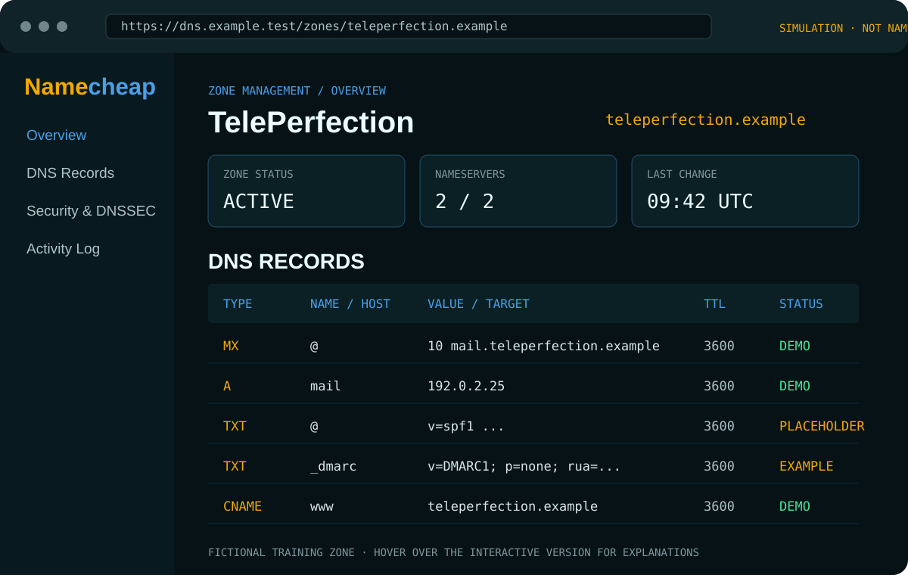

I get off the train and step onto the underground station platform. The double doors between the platform and the tunnel slide open. Arabic signage hangs above me. I move quickly through the station and out into the morning, heading for work in a glass-fronted office building. Dubai. I'm rather pleased not to be dealing with the November cold.
I settle in, get organised and glance at the big incident board to my left.
Outlook is down. Again.
Except this time, Outlook is only the beginning. What started life as an email client has become part of a much larger platform: identity, calendars, collaboration, cloud storage, business applications and the connections that other services rely on. When a shared dependency fails, the consequences travel well beyond the inbox.
We're calling this the Friday the 13th outage. Technically, the Microsoft disruption began on Thursday, 12 November, in the United States. By Friday morning, 13 November, it had spread across time zones and into the working day in Europe. The name stays.
You can see the spread more clearly when every timestamp is put on one clock. The timeline below is in GMT (UTC).
| GMT | WHAT HAPPENED |
|---|---|
| Thu 12 Nov, 16:17 | Microsoft records the start of the Exchange Online incident. Users begin experiencing problems accessing mailboxes through multiple connection methods, initially reported in the Americas. |
| Thu 12 Nov, about 18:00 | Downdetector reports surge sharply, with nearly 130,000 US Outlook problem reports shortly after 18:00 GMT. Outlook, Teams and other Microsoft 365 services are affected. |
| Thu 12 Nov, 17:52 | Anthropic opens an incident for elevated errors affecting the Microsoft 365 connector. Mail, SharePoint, Teams chat and calendar requests may fail. This timestamp is earlier than the public Downdetector surge. |
| Thu 12 Nov, 18:29 | OpenAI reports elevated errors affecting its Microsoft 365 connector. New connections may fail and connected tools may not work as expected. |
| Thu 12 Nov, 18:34 | Anthropic identifies an upstream provider issue. Its Microsoft 365 connector is failing for most requests. |
| Thu 12 Nov, 20:28 | Anthropic confirms Claude for Outlook is also affected: mail and calendar actions may fail, and some users may be unable to open the add-in. |
| Thu 12 Nov, 22:23 | Anthropic explicitly attributes the connector problem to the Microsoft 365 service incident. Mail, calendar and search tools remain unreliable. |
| Fri 13 Nov, overnight | Microsoft redirects traffic and restarts affected infrastructure. Some servers become unavailable again under load; recovery is uneven and the disruption continues across regions. |
| Fri 13 Nov, morning | Europe wakes up to an outage that is still not fully resolved. Microsoft reports progress, but users continue to experience intermittent access problems and delayed messages. |
| Fri 13 Nov, during the same period | Gemini also experienced an outage, but it attracted comparatively little attention. I have not found a reliable, timestamped public incident record that establishes its exact start and recovery times, or that links it to the Microsoft incident. |
A note on the AI services: the documented OpenAI and Anthropic incidents concerned their Microsoft 365 connectors, not proof that ChatGPT or Claude's core models had gone completely offline. Claude's own status page listed its API and Claude Code as operational while Microsoft-dependent features were affected. Gemini belongs in the wider outage picture, but its timing and cause should not be conflated with Microsoft's incident.
So this is not simply a story about an email client having a bad day. It is a story about how much of modern work now depends on a small number of interconnected platforms — and what happens when one of the foundations gives way.
WHAT YOU'VE CHECKED: Outlook Safe Mode rules out some add-ins and profile-level problems. Ping checks basic reachability; DNS lookup checks name resolution; the TCP 443 test checks HTTPS connectivity; and the final request tests the Outlook web endpoint. The local network and DNS are responding, but the service still isn't. This is a staged illustration, not a live diagnostic — the displayed results are fictional.
You have worked through the usual checks. Nothing changes. You would raise a support ticket, except the ticketing system is tied to the same email account that has just packed its bags and gone home.
So you do what any sensible person does. You make a coffee and have a chat with the IT guy. He's frustrated too. He's checked what he can check, but the problem appears to sit somewhere beyond his bit of the fence. He can't fix a service he doesn't control.
And that's the question. What happens when the service your entire company depends on stops working, and you have no practical control over it?
For this exercise, let's call the company TelePerfection. It's fictional, but the problem is familiar enough: around 105 people, a few shared departmental addresses, some staff with more than one mailbox, and a business that expects email to be there when it needs it.
Now, somewhere in the office, underneath a desk and behind a collection of cables, sits a Lenovo ThinkCentre Tiny. Nobody knows who owns it. Nobody particularly likes it. It is, in every meaningful sense, the red-haired stepchild of computers: a former paperweight with an unexpectedly useful second act.
Today, we're giving it a job.

01First, find out what actually broke
Before replacing anything, establish where the failure lives. “Outlook is down” describes what users see. It does not identify the cause.
| CHECK | WHAT TO LOOK FOR |
|---|---|
| One computer? | Check another device and the Outlook web app. That helps separate a local client problem from a wider service issue. |
| One user or everyone? | Compare affected and unaffected accounts, including shared mailboxes and aliases. |
| Can the tenant be reached? | Check the Microsoft 365 service-health dashboard and the organisation's admin notices. |
| Can mail be delivered? | Use message trace and mail-flow diagnostics where authorised. Record timestamps and error messages. |
| Name resolution or connectivity? | Check Domain Name System (DNS) records and network reachability before changing settings. |
It could be a Microsoft service incident. It could also be a tenant configuration problem, expired credentials, a DNS mistake, a network outage, a bad client update or a security control doing exactly what it was configured to do. We don't blame Microsoft just because Outlook is the messenger. That's how you end up fixing the wrong thing.
Keep evidence: exact errors, times, affected users, service-health notices and message-trace results. Don't change production DNS or redirect company mail to a home-built server as an improvised workaround.
02Who actually owns your email?
Email looks like one thing on the screen. Underneath, it is a chain of separate services and responsibilities.
| COMPONENT | WHAT IT DOES |
|---|---|
| Your domain | The name people use after the @ sign. |
| DNS | Domain Name System; publishes the records that tell the internet where services live. |
| Your mail platform | Stores mailboxes, authenticates users and provides access through Outlook or another mail app. |
| Your network and identity services | Provide the connectivity and sign-in controls that make the whole thing usable. |
With Microsoft 365, Microsoft operates the hosted service, but your organisation still controls important parts of the tenant, identity, domain configuration, user lifecycle and recovery arrangements. “It's in the cloud” doesn't mean “someone else has every responsibility”.
03The little server we're building
The ThinkCentre M920q Tiny is a sensible lab box: an Intel Core i7-8700T processor, 16GB of memory and a 512GB solid-state drive. It is small, relatively modest in power use, and more than capable of running a handful of test mailboxes and the supporting services.
Before installing mail software, we need a clean, secure Linux base. The first job is not Postfix. It is getting Ubuntu installed, patched, reachable over the network and recoverable if something goes wrong.
| STEP | WHAT TO DO |
|---|---|
| 1. Prepare the machine | Connect a monitor, keyboard and wired Ethernet. Download the current Ubuntu Server LTS installer from Ubuntu's official website and write it to a USB stick using a trusted imaging tool. Back up anything important first: the installation will erase the target drive. |
| 2. Install Ubuntu Server | Boot from the USB in UEFI mode. Select the 512GB SSD as the installation target, use the guided storage layout for this single-disk lab, create a named administrator account and give the machine a clear hostname such as mail-lab. Enable OpenSSH when the installer offers it. Keep the server installation minimal; we do not need a desktop environment. |
| 3. Give it a predictable address | Initially let the router provide an address using DHCP. Then create a DHCP reservation in the router so the same private LAN address is always assigned to this machine. This is usually simpler and less error-prone than configuring a static address in two places. Record the address and the router's gateway and DNS settings. |
| 4. Update the operating system | Log in locally or over SSH and install all available security and package updates. Reboot if the kernel or core system packages require it, then check that the machine comes back online. |
| 5. Secure remote administration | Create an SSH key on the administrator's own computer, install the public key on the server and test key-based login in a second terminal before changing SSH settings. Once confirmed, disable password-based SSH login. Do not disable the only working route into the machine. |
| 6. Configure the firewall | Allow SSH from the trusted local network before enabling the firewall. Keep inbound access closed by default; open mail ports only when the relevant service is installed and there is a specific test that requires them. Do not expose this lab directly to the public internet. |
| 7. Check time and automatic security updates | Confirm that time synchronisation is active and configure unattended security updates. Accurate time matters for logs, TLS certificates and authentication; updates reduce the time the server spends exposed to known vulnerabilities. |
| 8. Record and back up the base system | Document the hostname, private IP address, Ubuntu release, disk layout, administrator access method and installed packages. Back up configuration and keep a copy somewhere other than the ThinkCentre itself. |
On a fresh installation, the initial maintenance commands are deliberately simple:
sudo apt update
sudo apt full-upgrade
sudo apt install openssh-server ufw unattended-upgrades
sudo hostnamectl set-hostname mail-lab
hostnamectl
timedatectl statusBefore enabling UFW, allow the SSH connection you actually use. For example, if administration is restricted to your local network, adjust the subnet below to match your own LAN:
sudo ufw default deny incoming
sudo ufw default allow outgoing
sudo ufw allow from 192.168.1.0/24 to any port 22 proto tcp
sudo ufw enable
sudo ufw status verboseImportant: 192.168.1.0/24 is an example only. Replace it with the actual subnet on your network. If you enable the firewall before allowing your SSH source, you can lock yourself out. Keep a local keyboard and screen available until remote access has been tested.
At this point we have a patched Ubuntu Server with predictable local networking and restricted administration. We still have not exposed SMTP or IMAP to the internet. That comes later, after the mail services, DNS, certificates and security controls have been configured and tested.
| COMPONENT | JOB IN THE LAB |
|---|---|
| Ubuntu Server | The Linux operating system underneath the services. |
| Postfix | The Mail Transfer Agent (MTA): accepts and routes outgoing and incoming SMTP mail. |
| Dovecot | Provides IMAP access to stored mailboxes and handles mailbox authentication. |
| Rspamd | Scores messages for spam and other unwanted mail. |
| TLS | Transport Layer Security encrypts connections between clients and services. |
| Backups and monitoring | Help us detect failures and recover data and configuration. |

04Why IMAP, not POP3?
For this project, users need to see the same mailbox from a desktop, laptop and phone. That's what IMAP (Internet Message Access Protocol) is designed for: messages remain on the server and clients synchronise folders, read status and message changes.
POP3 (Post Office Protocol version 3) is a simpler retrieval protocol, traditionally associated with downloading messages to a client. It can be configured to leave copies on the server, but it isn't the synchronised multi-device mailbox model we're aiming for.
05The internet needs to find us
For a real domain, senders need to discover where to deliver mail. That means correct DNS records, including an MX (Mail Exchange) record pointing at the mail host and an A record mapping its hostname to an IPv4 address. Yes, that dinosaur. 🦕 We tech guys love it.
Mail delivery also depends on a stable public IP (Internet Protocol) address, working inbound and outbound SMTP (Simple Mail Transfer Protocol), and a matching reverse-DNS PTR record. Many ordinary office and residential internet connections are not suitable for hosting public mail: port 25 may be blocked, reverse DNS may not be configurable, and the IP address may have a poor sending reputation.
That's why the lab should use a controlled test domain or subdomain. For a production service, a reputable VPS or specialist mail host is often a better starting point than pointing the office broadband router at a mini PC.
06Inside a DNS control panel
Here's an independent, fictional Namecheap-inspired DNS control panel for our fictional company. It shows the sort of records an administrator might manage: the MX record that points mail towards a server, the A record that resolves the server name, and TXT records used for sender-authentication policies.

The .example domain and 192.0.2.25 address are reserved for documentation. The SPF and DMARC entries are deliberately incomplete placeholders. This is an independent teaching mock-up, not affiliated with or connected to Namecheap, not a live DNS login, and not a configuration to copy.
07Prove who sent the message
Three DNS-based controls help receiving servers check whether a message claiming to come from your domain is legitimate.
| CONTROL | WHAT IT DOES |
|---|---|
| SPF | Sender Policy Framework. Publishes which servers are authorised to send mail for a domain. |
| DKIM | DomainKeys Identified Mail. Adds a cryptographic signature that receiving systems can verify. |
| DMARC | Domain-based Message Authentication, Reporting and Conformance. Checks alignment with the visible From domain and tells receivers how to handle failures, while enabling reports. |
| DMARC rollout | Begin in monitoring mode, p=none, while legitimate senders are identified and alignment is checked. Move to quarantine or reject only when the evidence says it is safe; a strict policy introduced too early can block legitimate business mail. |
08Spam, certificates and the unglamorous bits
These are the day-to-day controls that keep a mail service safer and more dependable.
| CONTROL | JOB IN THE LAB |
|---|---|
| Rspamd | Inspects messages and applies spam scores to help identify unwanted mail. |
| TLS certificates | Protect connections between mail clients and the server, and between mail servers where supported. |
| Authentication | Use strong sign-in controls and keep administrator access separate from ordinary mail accounts. |
| Updates | Keep Ubuntu Server and the mail software patched. |
| Firewall | Restrict exposed services. Never publish administration interfaces directly to the internet. |
| Backups | Copy mailboxes and configuration to a separate location, then test that they can be restored. |
| Monitoring | Watch mail queues, disk space, certificates and service health. |
| Recovery notes | Document recovery steps so the fix does not live only in one person's head. |
This ThinkCentre is for a controlled demonstration and portfolio lab. It is not a responsible single point of failure for 105 employees. Production email needs resilience, redundant connectivity and power, monitored storage, tested off-site backups, security operations, patching, incident response and a documented recovery plan.
09What success looks like
We don't call the project finished because the services start. We test it.
- Create test accounts and a test domain that cannot be confused with the company's live mail.
- Send messages between controlled accounts and inspect delivery logs and headers.
- Connect two different clients over IMAP and confirm folders and read status synchronise.
- Test spam handling, TLS certificates and SPF/DKIM/DMARC results.
- Stop a service deliberately, observe the alert, restore it and document what happened.
- Back up a mailbox, restore it to a test location and verify the contents.
The verdict
Running your own email is possible. Running it reliably for a business is a different proposition. The software may be free; the responsibility isn't.
For a small IT portfolio project, this is a cracking exercise. It brings Linux administration, DNS, networking, authentication, mail flow, monitoring and recovery into one practical build. It also makes the hidden dependencies behind that familiar Outlook window a lot easier to understand.
And if the little Lenovo proves anything, it's that an old office PC can still have a useful second life. Just don't make it responsible for everyone's payslips.
An Eriu Technology practical case study. The company and scenario are illustrative. This lab is for learning and testing only; it is not a recommendation to replace a production mail service without a formal design, security review and business-continuity plan.